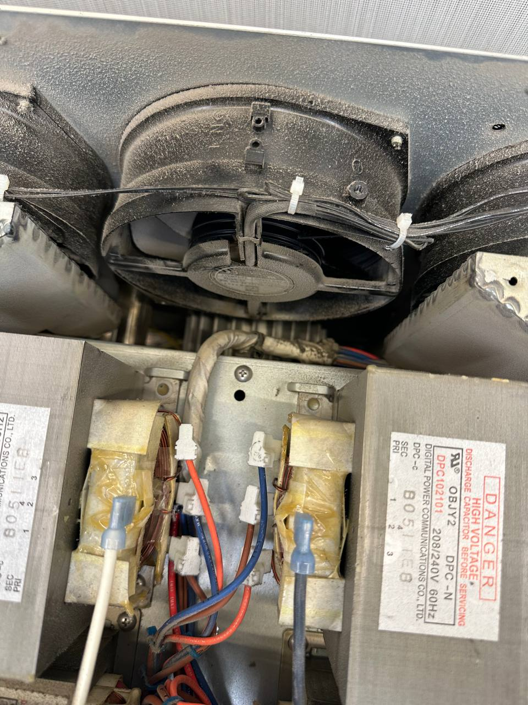

TurboChef F1 Error: Blower Running Status Bad
F1 on a TurboChef display is the code for Blower Running Status Bad: the oven's control is not getting the status confirmation it expects from the blower that moves air through the cavity, so it locks out cooking rather than run the oven in an unsafe condition. Clearing it rarely sticks. FixIt Expresso is an Authorized TurboChef Service Provider for Seattle and the greater Puget Sound.
Last updated:
What Does the TurboChef F1 Error Mean?
F1 means Blower Running Status Bad. A TurboChef speed oven moves air through the cavity with a blower; the control board expects a status signal confirming that it is turning and moving air. When that confirmation does not arrive, the oven flags F1 and suspends cooking. It is a status fault, not a temperature fault, which is why it can appear the moment the oven tries to start a cycle.
In a working kitchen F1 shows up as an oven that powers on, accepts a recipe, then faults before or during the cook. Power-cycling buys you one cycle at most, because the condition behind the code has not changed. A speed oven that cannot circulate air will not cook to spec even while it runs.

Not sure which code you're looking at? Our TurboChef F1-F10 error code guide lists every fault and what it means, so you can tell us the right code when you call. We arrive with the parts for your model.
What Actually Causes F1 - and Why the Code Can't Tell You
F1 can be produced by more than one condition, and the display does not differentiate between them. Airflow that is restricted, a blower that is no longer turning as expected, and a status circuit that has stopped reporting can all land the oven on the same F1 screen. Naming one of them from the code alone would be a guess, and a guess is how a one-visit repair becomes a two-visit repair.
Where F1 turns up more often, and what makes it worse:
Airflow that gets worse over a shift
Filters, vents and cavity air paths load up with dust and grease. The oven works fine at 10am and faults at 7pm, which is why the complaint so often reads “it only does it when we're busy.”
Compact-cavity ovens run hotter
Small-cavity models like the Bullet (ENC-1618B) and Encore build heat faster than larger ovens, so airflow-related faults and F8 high-limit trips tend to surface sooner on units run hard.
High-volume units, no maintenance schedule
Long service days and back-to-back loads with no scheduled maintenance let a slow decline go unnoticed until the oven faults mid-shift.
Airflow faults also travel in packs. The same restricted air path behind an F1 is what pushes an oven toward F3 (Magnetron Current Low) and over-temperature conditions, and repeated heat stress shows up later as F4 (Door Monitor Defective) or F7 (RTD Failure) faults. Getting the airflow system looked at properly is usually what stops the next code from arriving. Call 425-547-0200 to get an F1 diagnosed.
How We Diagnose and Repair an F1 Fault
Here is the sequence on an F1 service call, from your first phone call to the cook test at the end:
-
Tell us the code and the model
Give us F1 plus your model (Sota, Bullet, Encore, i3, i5, NGC and so on). That tells the technician which parts to load before leaving the shop.
-
Same-day or scheduled visit
An oven down during service hours is covered. Non-urgent faults can be booked in, or dropped off for the Sota (NGO), ECO and CIBO+.
-
On-site diagnosis and a quote first
We confirm the F1, read the fault history to see how the condition has been developing, and test the airflow and blower status circuit as a system. You see the number before any work starts.
-
Repair with genuine OEM parts
Once the actual cause is identified, most F1 jobs finish in a single visit.
-
Full cook test before we leave
The oven runs a complete cook cycle under real load. If it does not hold through a cook test, it is not done.
Which TurboChef Models Show F1?
All of them. F1 is a blower status fault and every TurboChef oven depends on moving air through the cavity, so the code is not tied to one model. What differs is how hard a unit is run and whether anything restricts its airflow.
That is why we ask which oven you have: it decides the parts, not the diagnosis.
Call 425-547-0200 with your model number.
What Preventative Maintenance Prevents F1?
F1 is one of the faults a maintenance visit is most likely to head off, because almost everything behind it develops gradually and visibly long before the display shows a code.
Air filters and vent clearances
Filters on a schedule and intake vents kept clear of stacked boxes cost less than a lost dinner service, and they are what keeps an airflow fault from becoming an emergency call.
Dust and grease in the airflow path
Dust and grease blanket the blower housing over months of service. Left alone it insulates and restricts, then shows up as a fault during your busiest hour. A scheduled clean-out keeps the airflow path performing as new.
Fault-history checks at every visit
These ovens log faults, including the ones your staff cleared without telling you. We read that history on every service call, so an F1 that has been logged ten times before it finally locked the oven out gets addressed on your schedule instead of mid-rush.
TurboChef F1 Error FAQ
Can I fix a TurboChef F1 error myself?
No. F1 is not a user-serviceable fault, and more than one condition can produce it. The airflow components and the circuits that drive them sit behind the oven's high-voltage section, so this is a job for a factory-trained technician with the right test equipment. An on-site diagnosis is the fastest route back to service. Call 425-547-0200.
Will F1 damage my TurboChef oven if I keep using it?
The oven is designed to lock cooking out when it cannot confirm airflow, so it will not keep running normally with an active F1. Continuing to clear the code and push the oven usually means more failed cook cycles and, in our experience, a bigger repair than the first visit would have been. Call 425-547-0200.
F1 on the Display Right Now?
Call now or request service online - same-day emergency service available for a down oven.
TurboChef F1 blower-fault repair across the Puget Sound: Seattle • Bellevue • Redmond • Kirkland • Renton • Kent • Tacoma • Everett • Auburn • Federal Way. We're a mobile service based in Renton, our technicians come to your kitchen within roughly 80 miles of Seattle. The TurboChef repair page covers the whole service picture.